TARKOV
Оружие
| Штурмовые винтовки | ||
|---|---|---|
| название | картинка | описание |
| ак-12 | 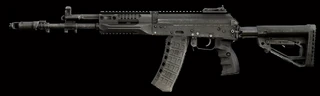 |
5.45мм Автомат Калашникова АК-12 является основным образцом индивидуального стрелкового оружия личного состава мотострелковых и других подразделений Вооруженных сил России. Автомат АК-12 входит в состав экипировки военнослужащего «Ратник». |
| ак-101 | 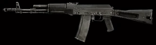 |
Экспортный вариант автомата Калашникова в калибре 5,56 мм. Оснащён складывающимся на левый бок полимерным прикладом и универсальным креплением (планка «ласточкин хвост») для крепления прицелов, как оптических, так и ночных, на левой стороне ствольной коробки. |
| ак-103 | 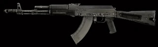 |
Автомат Калашникова калибра 7,62 мм. Оснащён складывающимся на левый бок полимерным прикладом и универсальным креплением (планка «ласточкин хвост») для крепления прицелов, как оптических, так и ночных, на левой стороне ствольной коробки. |
| АШ-12 | 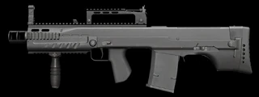 |
калибр 12.7, Российский крупнокалиберный штурмовой автомат, созданный в ЦКИБ СОО для нужд подразделений спецназначения ФСБ России вместе со снайперской винтовкой ВССК. |
| G36 | 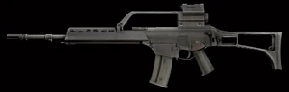 |
G36 - немецкая автоматическая винтовка под малоимпульсный патрон НАТО 5.56x45 мм. Разработана фирмой Heckler & Koch в начале 90-х годов XX века. После провальных для H&K тендеров на новые винтовки для бундесвера были свёрнуты программы G41 и G11, оказавшиеся слишком дорогостоящими для армии объединённой Германии. В 1995 году на войсковых испытаниях была представлена новая автоматическая винтовка HK50, которая была успешно принята бундесвером под индексом G36. Эта винтовка заменила G3 в 1997 году. |
| Штурмовые карабины | ||
| СР-3М | 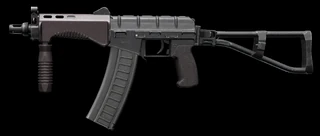 |
СР-3М — мощный автомат, имеющий очень компактные размеры, сравнимые с пистолетами-пулеметами, но заметно превосходящий его по огневой мощи за счет использования специальных бронебойных боеприпасов. Основное назначение СР-3М — использование в качестве оружия скрытого ношения в подразделениях российского спецназа. Разработан в ЦНИИТочМаш на базе автомата АС ВАЛ. |
| SAG АК-545 | 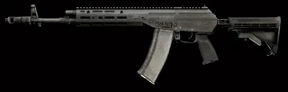 |
Карабин АК-545 производства Sureshot Armament Group, построенный на базе современных автоматов Калашникова. |
| TX-15 DML | 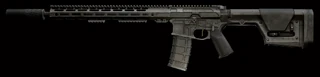 |
The TX15 Designated Marksman Light (DML) — высокоточная гражданская винтовка под патрон 5.56x45 выполненная на базе AR-15 систем. | Пулемёты |
| M60E4 | 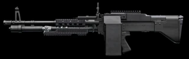 |
СР-3М — мощный автомат, имеющий очень компактные размеры, сравнимые с пистолетами-пулеметами, но заметно превосходящий его по огневой мощи за счет использования специальных бронебойных боеприпасов. Основное назначение СР-3М — использование в качестве оружия скрытого ношения в подразделениях российского спецназа. Разработан в ЦНИИТочМаш на базе автомата АС ВАЛ. |
| ПКП | 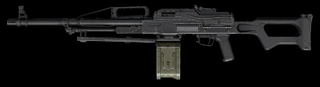 |
7,62 мм ПКП "Печенег" широко известен благодаря своей надежности и огневой мощи. Проверенные временем технические решения, умело совмещенные с передовыми подходами к эргономике, позволили повысить не только мобильность стрелка на поле боя, но и точность ведения огня на расстоянии до 1500 м, устранив эффект теплового миража за счет оснащения пулемета надствольной транспортировочной рукояткой. |
| РПК-16 | 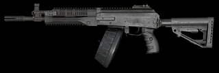 |
Российский единый ручной пулемет - РПК-16 под калибр 5.45x39, который разрабатывался на замену устаревшему РПК-74. Ключевыми особенностями данного образца вооружения являются - быстросменные стволы, улучшенная эргономика, а так же - цевье и крышка ствольной коробки с направляющими типа "Weaver". | Дробовики |
| АА 12 Gen 2 | 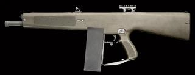 |
AA-12 (Auto Assault-12) - надежный автоматический дробовик 12 калибра. У AA-12 Gen2 установлена направляющая для установки прицельных приспособлений. Особенностью этого дробовика является наличие накопления импульса отдачи, благодаря чему отдача ощущается довольно мягкой, без потери скорострельности и убойности. AA-12 предназначен для армейских и полицейских подразделений. Производство Military Police Systems. |
| Автоматический дробовик Сайга-12К | 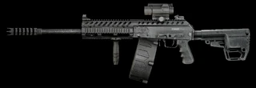 |
Модификация гладкоствольного дробовика Сайга-12К, позволяющая вести полностью автоматический огонь. Оружие снабжено барабанным магазином повышенной емкости на 20 патронов. Адская машинка! |
| КС-23 | 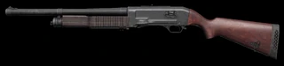 |
КС-23 (Карабин Специальный 23 мм) — многофункциональное полицейское оружие, предназначенное для пресечения массовых беспорядков, избирательного силового, психического и химического воздействия на правонарушителей. | Марксманские винтовки |
| HK G28 | 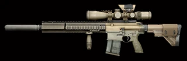 |
Винтовка HK G28 была разработана компанией Heckler & Koch специально по заказу Бундесвера, в качестве оружия поддержки малых пехотных подразделений. G28 создана на основе спортивно-охотничьей самозарядной винтовки HK MR308, которая, в свою очередь, представляет собой гражданский вариант автоматической винтовки HK 417. Несмотря на ряд отличий, HK G28 по своему устройству на 75% частей взаимозаменяема с HK 417. Эта винтовка дает возможность пехоте вести эффективную стрельбу на недоступные для штатных штурмовых винтовок калибра 5.56мм дистанции. |
| Mk-18 .338LM | 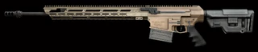 |
Полуавтоматическая винтовка "MK-18 Mod 1" была разработана с целью использования преимущества характеристик патрона .338 Lapua Magnum. Данная винтовка сочетает в себе прекрасные баллистические характеристики при достаточно не большом весе. Благодаря использованию газоотводной автоматики с коротким ходом поршня, винтовка имеет прекрасную точность, высокий ресурс и надежность. Двусторонние органы управления, эргономические особенности, а так же высокая модульность делает MK-18 отличным выбором как для охотников, стрелком высокоточников так и для спортсменов специализирующихся на стрельбе на дальние дистанции. |
| СВДС | 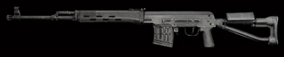 |
Самозарядная снайперская винтовка Драгунова СВДС разработана на базе проверенной временем винтовки СВД для вооружения снайперов воздушно-десантных войск и специальных подразделений, нуждающихся в более компактном снайперском оружии. Благодаря использованию надежной автоматики винтовка сочетает в себе хорошую точность и кучность стрельбы и высокую практическую скорострельность, позволяющую поражать одну цель несколькими последовательными выстрелами или же быстро поражать несколько целей. | Дробовики |
| АА 12 Gen 2 | AA-12 (Auto Assault-12) - надежный автоматический дробовик 12 калибра. У AA-12 Gen2 установлена направляющая для установки прицельных приспособлений. Особенностью этого дробовика является наличие накопления импульса отдачи, благодаря чему отдача ощущается довольно мягкой, без потери скорострельности и убойности. AA-12 предназначен для армейских и полицейских подразделений. Производство Military Police Systems. | |
| Автоматический дробовик Сайга-12К | Модификация гладкоствольного дробовика Сайга-12К, позволяющая вести полностью автоматический огонь. Оружие снабжено барабанным магазином повышенной емкости на 20 патронов. Адская машинка! | |
| КС-23 | КС-23 (Карабин Специальный 23 мм) — многофункциональное полицейское оружие, предназначенное для пресечения массовых беспорядков, избирательного силового, психического и химического воздействия на правонарушителей. | Ручные гранатомёты |
| M32A1 | 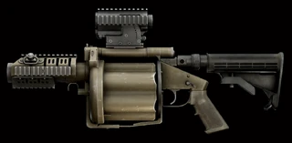 |
40-мм шестизарядный гранатомёт M32A1 MSGL разработанный Milkor USA. Этот универсальный гранатомет использует хорошо зарекомендовавший себя принцип работы револьвера для достижения высокой скорострельности и точного наведения на цель. |
| РШГ-2 | 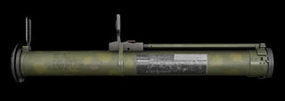 |
Одноразовая реактивная штурмовая граната 72.5мм предназначена для поражения живой силы противника на открытой местности, в укрытиях полевого типа, зданиях и сооружениях различного типа. Производство ГНПП Базальт. |